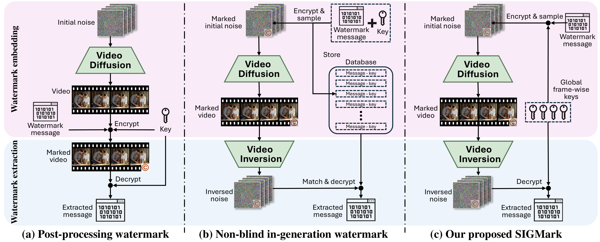
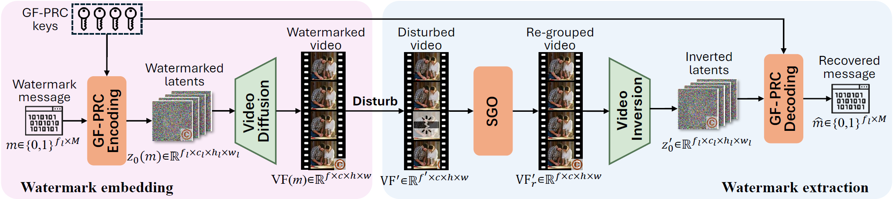
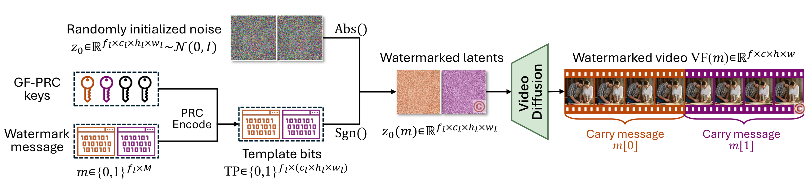
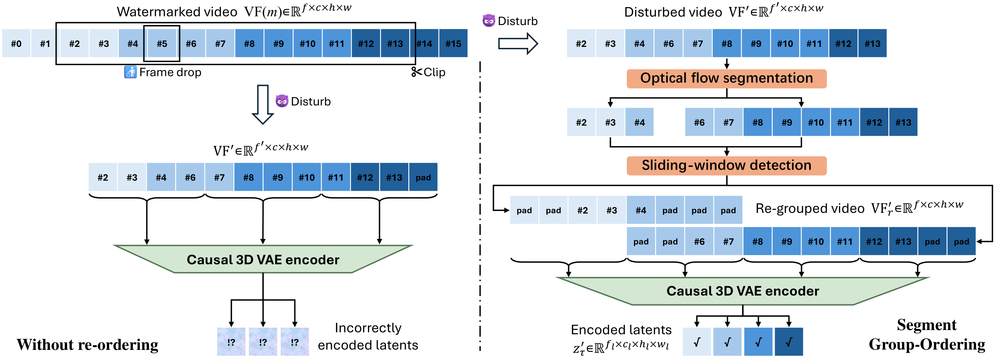
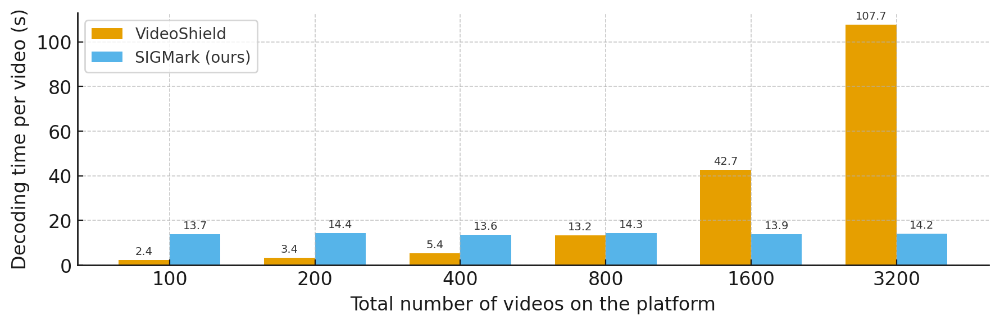

SIGMark: Scalable In-Generation Watermark with Blind Extraction for Video Diffusion
* Equal contribution. † Corresponding author.
Abstract
Artificial Intelligence Generated Content (AIGC), particularly video generation with diffusion models, has been advanced rapidly. Invisible watermarking is a key technology for protecting AI-generated videos and tracing harmful content, and thus plays a crucial role in AI safety. Beyond post-processing watermarks which inevitably degrade video quality, recent studies have proposed distortion-free in-generation watermarking for video diffusion models. However, existing in-generation approaches are non-blind: they require maintaining all the message-key pairs and performing template-based matching during extraction, which incurs prohibitive computational costs at scale. Moreover, when applied to modern video diffusion models with causal 3D Variational Autoencoders (VAEs), their robustness against temporal disturbance becomes extremely weak. To overcome these challenges, we propose SIGMark, a Scalable In-Generation watermarking framework with blind extraction for video diffusion. To achieve blind-extraction, we propose to generate watermarked initial noise using a Global set of Frame-wise PseudoRandom Coding keys (GF-PRC), reducing the cost of storing large-scale information while preserving noise distribution and diversity for distortion-free watermarking. To enhance robustness, we further design a Segment Group-Ordering module (SGO) tailored to causal 3D VAEs, ensuring robust watermark inversion during extraction under temporal disturbance. Comprehensive experiments on modern diffusion models show that SIGMark achieves very high bit-accuracy during extraction under both temporal and spatial disturbances with minimal overhead, demonstrating its scalability and robustness.
Visualization
| Image Prompt | Traditional Watermark (DCT) | SIGMark (Ours) |
|---|---|---|
 |
 |
 |
 |
 |
 |
The videos above are generated by HunyuanVideo, each with a 512x16-bit watermark. Traditional post-processing watermarking methods such as DCT introduce visible quality degradation in generated videos, including tiny spots and stripes (in the upper left corner of the picture). In contrast, SIGMark embeds watermarks during generation and is theoretically and experimentally proved to introduce no quality loss at all.
Method

As video diffusion models are increasingly used to produce high-fidelity AIGC, watermarking is becoming essential for copyright attribution and for tracing harmful or misleading content back to its source. Existing approaches face a fundamental tradeoff: post processing watermarks tend to introduce visible distortion, while many distortion free, in generation schemes are not blind and therefore require storing per sample information and performing large scale matching during extraction, which becomes increasingly expensive as the platform grows. Meanwhile, practical video diffusion pipelines often rely on causal 3D VAEs, so watermark recovery can depend on preserving the original temporal structure, and common temporal edits such as clipping or frame dropping can severely degrade extraction. Our method performs in generation watermarking while addressing both scale up efficiency and robustness to temporal disturbances.

Overview of our proposed SIGMark. Embedding: We encode the watermark message into the initial latent noise using a Global set of Frame-wise Pseudo-Random Coding (GF-PRC) keys. The diffusion model then denoises this noise into video frames that carry the embedded messages. Extraction: A (possibly disturbed) video is first processed by our proposed Segment Group-Ordering (SGO) module to recover the correct causal frame grouping, then inverted to obtain the latent noise, from which the message is decoded using the GF-PRC keys. The system stores only the GF-PRC keys for both embedding and extraction, enabling blind watermarking.

Section 3.3 presents SIGMark's in-generation watermarking pipeline based on Global Frame-wise Pseudo Random Coding. For each latent-frame index \(i\), the message segment \(m[i]\) is encoded with a global key \(K[i]\) to obtain randomized template bits \(TP[i]\). These bits are then used to modulate only the sign of the sampled Gaussian noise while preserving its magnitude, yielding \(z_0(m)=(2TP-1)\odot |z_0|\), so the modified noise remains Gaussian-distributed and is thus compatible with standard diffusion sampling. The diffusion model subsequently denoises \(z_0(m)\), and the causal 3D VAE decodes the resulting latents into video frames \(VF(m)\), with the watermark propagated across causal frame groups.

Section 3.4 formulates the blind extraction procedure and its robustness mechanism. Given a potentially temporally disturbed video \(VF'(m)\), the method first applies the Segment Group-Ordering (SGO) module to recover the causal grouping and frame ordering required by the causal 3D VAE encoder, as illustrated in Figure 4. SGO consists of optical-flow based segmentation to partition the video into temporally consistent contiguous segments, followed by a sliding-window detection step that leverages the global frame-wise PRC key set to identify the correct causal-group start within each segment by seeking consecutive detections of latent frame indices. After re-grouping into \(VF'_r\), diffusion-based inversion produces the estimated initial latent noise \(z'_0\), and the watermark is decoded by applying PRC decoding to the signs of \(z'_0[i]\) under the corresponding global keys, yielding \(\hat m[i]\); the use of global keys eliminates per-sample storage and avoids template matching, while SGO specifically targets robustness under clipping, frame insertion, swapping, dropping, and related temporal perturbations.
Experimental Results
Video watermarking results: message recovery bit accuracy and video quality score.
| Diffusion model | HunyuanVideo T2V | HunyuanVideo I2V | |||||||
|---|---|---|---|---|---|---|---|---|---|
| Watermarking | 512 bits | 512x16 bits | 512 bits | 512x16 bits | |||||
| Method | Category | Bit acc↑ | V-score↑ | Bit acc↑ | V-score↑ | Bit acc↑ | V-score↑ | Bit acc↑ | V-score↑ |
| No-mark | -- | -- | 0.490 | -- | 0.490 | -- | 0.463 | -- | 0.463 |
| DCT | Post | 0.889 | 0.424 | 0.862 | 0.423 | 0.890 | 0.452 | 0.858 | 0.456 |
| DT-CWT | Post | 0.619 | 0.416 | 0.650 | 0.436 | 0.627 | 0.458 | 0.611 | 0.463 |
| VideoMark | None-blind | 0.873 | 0.507 | 0.758 | 0.502 | 0.846 | 0.483 | 0.707 | 0.482 |
| VideoShield | None-blind | 1.000 | 0.497 | 0.991 | 0.506 | 1.000 | 0.482 | 0.999 | 0.482 |
| SIGMark (Ours) | Blind | 0.958 | 0.506 | 0.885 | 0.499 | 0.981 | 0.472 | 0.905 | 0.488 |
We implement DCT and DT-CWT through the open-source code of video-invisible-watermark and blind-video-watermark respectively, and we implement VideoMark and VideoShield by adapting their officially released code and hyper-parameter to new diffusion models and prompts.
We compare our method against four baselines: DCT (Hartung & Girod, 1998a), DT-CWT (Coria et al., 2008), VideoShield (Hu et al., 2025a), and VideoMark (Hu et al., 2025b). DCT and DT-CWT are widely used post-processing watermarking methods, while VideoShield and VideoMark are recent in-generation methods for video diffusion models but are non-blind. For post-processing baselines, we first generate standard videos with the diffusion model and then apply watermarking under different settings. As shown in Table 1, post-processing watermarking causes notable quality degradation compared with no-watermark videos, whereas in-generation methods keep visual quality essentially unaffected. SIGMark is performance-lossless (see Appendix A) and achieves very high bit accuracy under both 512-bit and 512x16-bit settings, outperforming VideoMark by large margins and remaining competitive with VideoShield, which requires access to original watermark information.

Baseline methods such as VideoShield and VideoMark are non-blind watermarking schemes: they require storing watermark-related information (messages, encoding keys, etc.) during generation and matching against all stored entries during extraction, so extraction cost grows with the total number of generated videos. SIGMark is blind and maintains only a global set of frame-wise PRC keys, without any sample-specific metadata during extraction, enabling constant extraction cost for large-scale platforms. We analyze extraction time under different platform scales using HunyuanVideo I2V with 512x16-bit watermark and no disturbances. For fairness, inversion runs on GPU, while the remaining extraction steps, including decryption and message matching, run on CPU. As shown in Figure 5, VideoShield scales linearly with the number of generated videos and becomes impractical at very large scale, whereas SIGMark remains constant and demonstrates strong scalability.
Citation
@inproceedings{
zhu2026sigmark,
title={SIGMark: Scalable In-Generation Watermark with Blind Extraction for Video Diffusion},
author={Xinjie Zhu and Zijing Zhao and Hui Jin and Qingxiao Guo and Yilong Ma and Yunhao Wang and Xiaobing Guo and Weifeng Zhang},
booktitle={The Fourteenth International Conference on Learning Representations (ICLR)},
year={2026},
url={https://openreview.net/forum?id=tKyAD2LhnI}
}